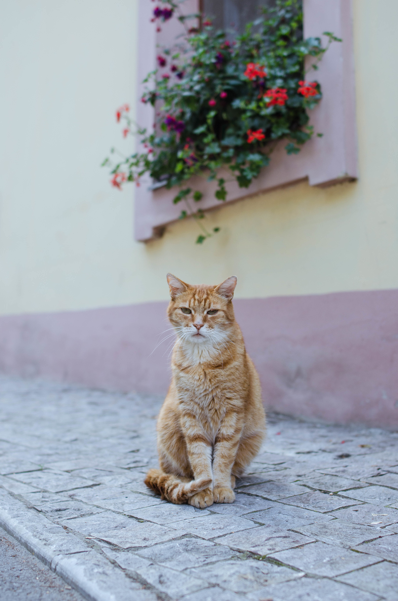
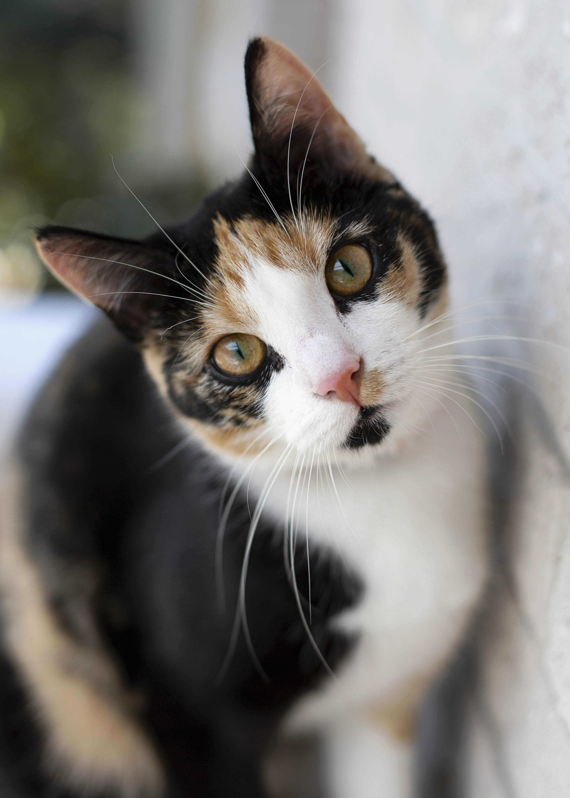
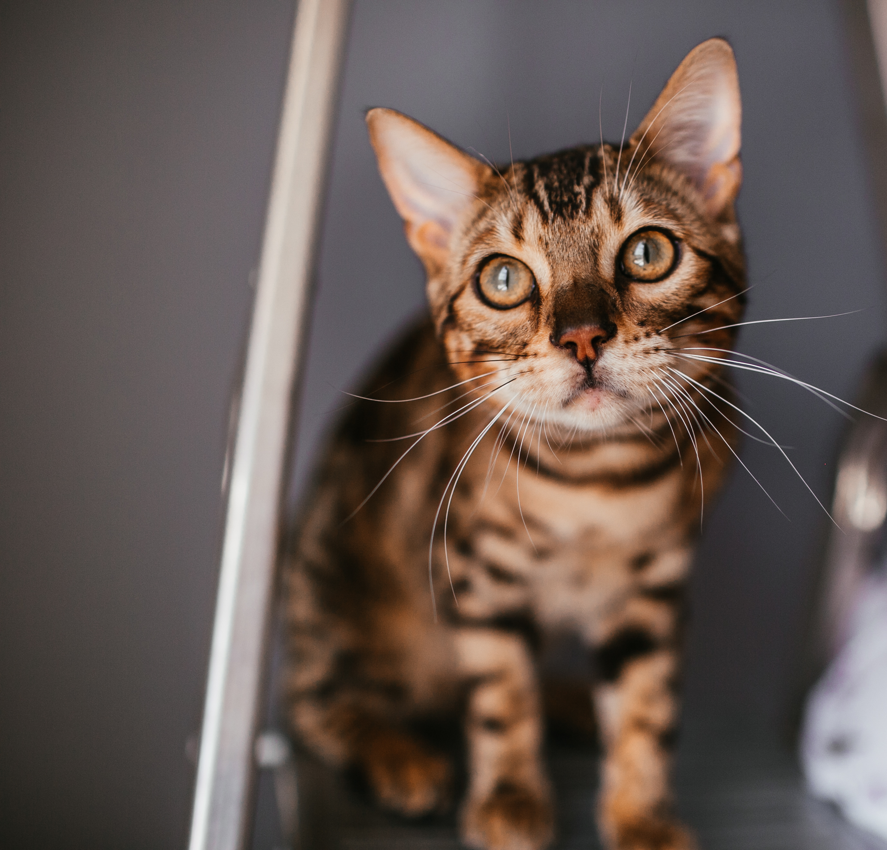

Logan
DisponívelEste é o Logan, um dos nossos príncipes. Está procurando um lar amoroso.
A HappyCatONG é uma organização dedicada ao resgate e cuidado de gatos abandonados. Nosso objetivo é proporcionar um lar seguro e amoroso para esses animais, além de promover a conscientização sobre a importância da adoção responsável.
Quero ajudarSomos uma organização dedicada ao bem-estar dos gatos e à promoção de sua qualidade de vida.

Este é o Logan, um dos nossos príncipes. Está procurando um lar amoroso.

Esta é a Coraline, uma gata gentil e adorável. Ela está ansiosa para encontrar sua família para sempre.

Este é o Timy, um felino brincalhão e carinhoso. Ele está esperando por alguém especial para chamá-lo de seu.